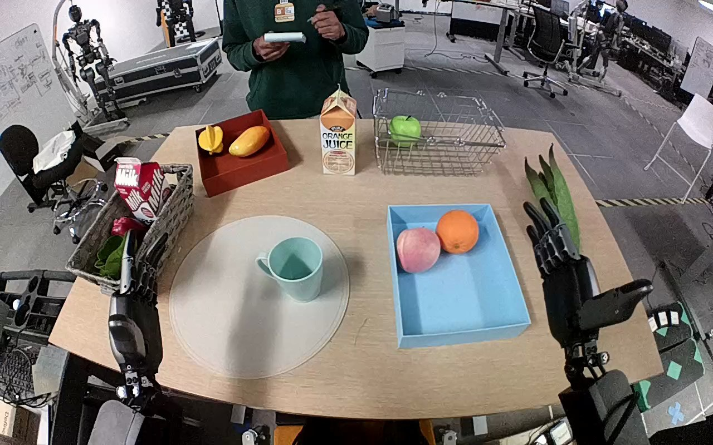

NVIDIA GR1 · 57
Video 57

Visual review action_review.json
{
"prompt_protocol": "humanoid_action_v1",
"prompt_provenance": "visually_authored_from_video_and_initial_frame",
"reviewed_contact_sheets": [
"sheet_001.jpg"
],
"inspected_frame_stride": 2,
"inspected_sampled_frame_count": 60,
"initial_scene": "Forward-facing egocentric view over a tabletop. A pale blue/turquoise handled mug stands on a circular light mat. A shallow blue tray to its right contains two fruit-shaped objects, leaving space toward its near edge. Both robot forearms and open hands are visible from the lower edge; a person stands across the table holding a controller without touching the task objects.",
"anatomical_side_evidence": {
"assignment": "The manipulating hand is robot-relative right; the opposite hand is robot-relative left.",
"evidence": "The camera looks forward from the robot toward the table; the two visible forearms emerge on their respective sides of the near-body lower edge. The active forearm remains connected to the lower-right body-side origin while reaching diagonally toward the mug. The lower-left forearm remains separate and idle. This egocentric body/arm-origin convention supports the source instruction naming the right hand.",
"confidence": "high",
"limitation": "Shoulder joints are outside the camera view; assignment uses the visible near-body forearm origins and forward egocentric camera convention."
},
"arm_hand_roles": {
"right": "Sole manipulating hand. Closes articulated fingers around the mug rim/body, lifts it, transports it to the blue tray, lowers it, opens to release and withdraws.",
"left": "Remains open near the left table edge throughout; does not touch or stabilize the mug or tray.",
"coordination": "Single-hand manipulation without hand-to-hand transfer or support. The person across the table does not interact physically with the mug."
},
"observed_sequence": [
{
"source_frame_interval": [
0,
27
],
"action": "Both hands remain open with the mug stationary on the circular mat; no object contact.",
"confidence": "high"
},
{
"source_frame_interval": [
28,
60
],
"action": "Right forearm reaches diagonally inward from its body-side origin; open fingers move around the mug rim/body while the mug remains on the mat. Left hand remains idle.",
"confidence": "high"
},
{
"source_frame_interval": [
61,
72
],
"action": "Right fingers close around the mug near its upper body and rim, one digit descending near/inside the opening; the mug is secured while still at the mat.",
"confidence": "high"
},
{
"source_frame_interval": [
73,
82
],
"action": "Right hand lifts the mug clear of the mat and carries it diagonally right over the blue tray.",
"confidence": "high"
},
{
"source_frame_interval": [
83,
108
],
"action": "Right hand lowers the mug into the tray in front of the fruit-shaped objects, keeping its hold while making a small positional adjustment.",
"confidence": "high"
},
{
"source_frame_interval": [
109,
119
],
"action": "Right fingers progressively open and release the mug; the hand separates and withdraws rightward. The mug changes its yaw and wobbles slightly after release, remaining inside the tray with its opening upward at the final frame.",
"confidence": "high"
}
],
"evidence_frame_indices": [
0,
60,
70,
80,
90,
104,
110,
114,
118,
119
],
"coordination": "Right hand performs the complete transfer; left hand stays clear and provides no support.",
"observed_outcome": "The mug is visibly released inside the blue tray, leaving the circular mat empty.",
"uncertainties": [
"The exact instant of mug-base contact with the tray is partly obscured by the hand; the mug is visibly inside the tray and separated from the hand at the ending. Only a brief period after release is available, so long-term settling is not established."
],
"annotation_discrepancies": [],
"selected_execution_status": "success",
"terminal_state": "At frame 119 the mug is inside the blue tray in front of the fruit-shaped objects, its opening upward; the right hand is open and withdrawing, no longer holding it. The mug shows slight settling motion near the ending. The mat is empty and the left hand remains idle.",
"video_id": "57",
"dataset": "NVIDIA_GR1_100",
"dedicated_review_agent": "review_gr1_57",
"review_source_video": "NVIDIA_GR1_100/57/original/original.mp4",
"source_frame_count": 120,
"source_fps": 20.0,
"native_detail_frames": [
0,
60,
70,
80,
90,
104,
110,
114,
118,
119
],
"world_model_prompt": "The robot uses its right hand to grasp the pale blue mug around its rim and body, lifting it from the circular mat. It carries the mug over the blue tray, lowers it into the open space in front of the fruit, and opens its fingers to release it, then withdraws its hand as the mug remains inside the tray. Keep the camera fixed; preserve robot geometry, physically valid joint motion, and normal gripper opening and closing.",
"original_task_instruction": "Use the right hand to pick up blue mug from table mat to blue box.",
"selected_segment": {
"start_frame": 0,
"end_frame_exclusive": 120,
"reason": "Complete original single-task reference; no cropping or trimming requested."
},
"source_video_sha256": "51296b5d7e987b91dd3a5ace68be477beb48a629e1f7d5d2ed38387660f160d0",
"review_completed_at": "2026-10-13T18:15:19.295292+00:00"
}